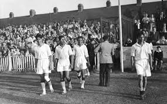
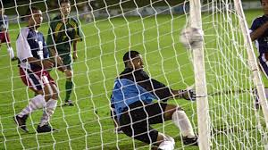
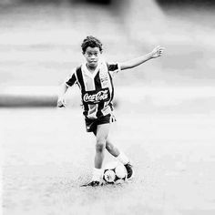

La final para este nuevo y próximo mundial que se nos viene y que es sede Qatar está prevista en una ciudad que no existe, aún no existe y la proponen como sede de una final!!

4.Indios en Brasil 1950
Los Indios fueron clasificados al mundial de Brasil en 1950, sin embargo estos rechazaron jugar debido a que Brasil no le permitió jugar descalzos, que era como jugaban ellos en su país.
3.Expulsión más rápida del fútbol
David Pratt en 2008 se convirtió en el jugador expulsado más rápido en un partido, en 3 segundos por una dura entrada a su rival

2.El partido con más goles en la historia
El partido que se llevó el récord como el con más goles en lo profesional fue uno en 2001 en el que triunfó Australia contra Samoa por 31-0!!
1.Ego en su punto
Cristiano Ronaldo en 2013 inauguró un museo entero sobre él, si bien es un jugador sobrenatural es tanto el amor propia para hacer un museo completo en su nombre?

0.Simplemente Ronaldinho.
Ronaldinho se dió a conocer a los 13 años, en un partido en el que él hizo nada menos que 23 goles! el partido lo ganó su equipo por 23-0, un fenómeno!, luego siguió creciendo y creciendo futbolísticamente.
Gracias por visitar nuestro sitio, nosotros: Ayline Gallardo, Demis Vargas y Raúl Navarro te lo agradecemos y esperamos te hayas entretenido y aprendido algo más de este hermoso deporte!